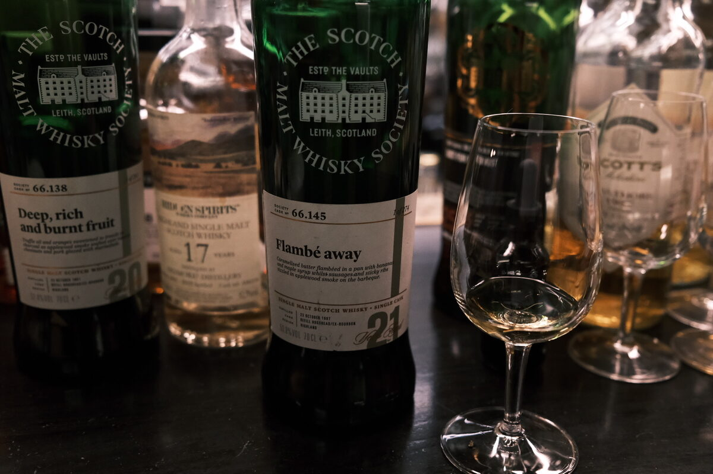

Ardmore "Flambé away" 1997 SMWS 66.145 21 years 53.8% (refill ex-bourbon hogshead)
More old Ardmore please. This time with the funky SMWS name. Only one place to get that…
Colour Light gold.
Nose Dark chocolate. Fruit mince tart, rum and raisin (refill magic). Cookie dough. Herbaceous, grassy (recall the Hidden Sprits 17, but less delicate). Peaches and cream. With water, a bit of wax, almonds.
Palate Caramel and toffee. Cinnamon, cloves, oak spices. Dark chocolate, a little smoked apple. Orchard fruits. The peat is barely present, replaced with some lightly smoked herbs, grass, chocolate. With water, bittersweet, elegant, like an amaro (we’ve seen this before). Citrus brightness, cacao, light smoke.
Finish Delicate, a little floral, grassy. Lightly sweet, Italian Easter tart. Long and warming. Tart strawberries. With water, smoke, and a hint of woody peat.
Comments Elegant, delicate, intriguing. 87/100.

Posted by Dominic on 14 Jun 2021